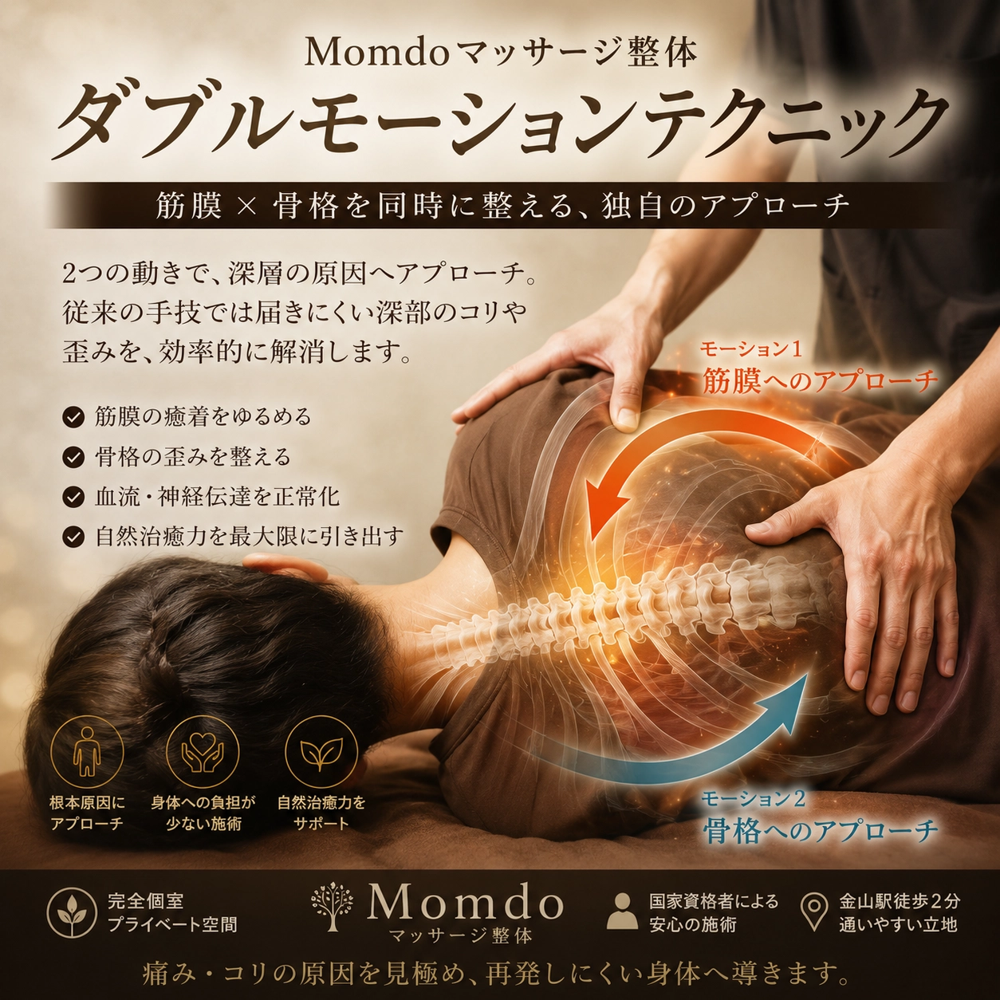
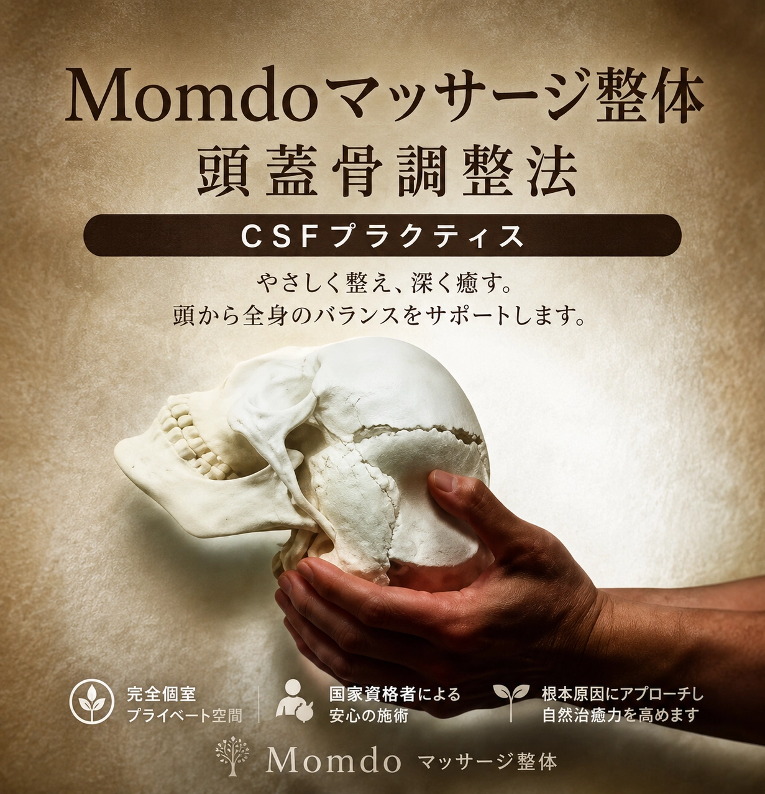
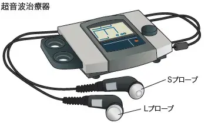
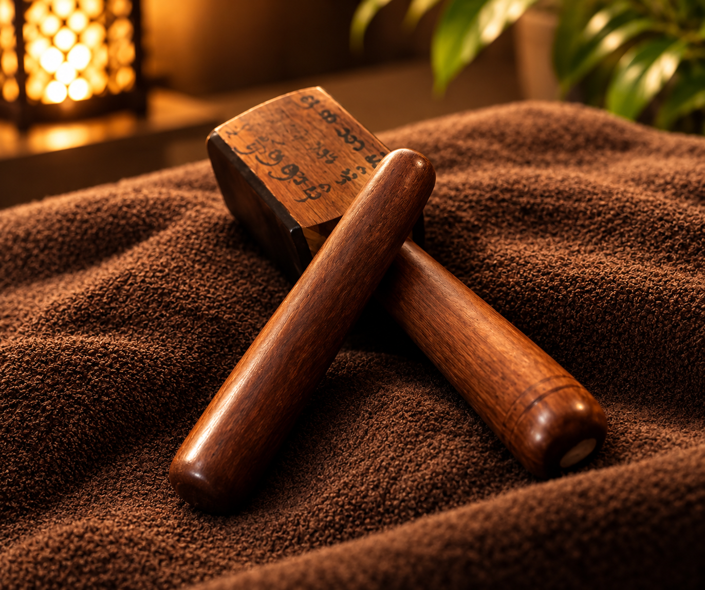

ダブルモーションテクニック

2つのモーションを組み合わせ、関節の動きをサポートする手技です。
ダブルモーションテクニックは、関節を動かす方向への誘導と、関節周囲を支える手の動きを組み合わせながら行います。2つの動きを連動させることで、関節の位置や動きの状態を確認しつつ、無理のない範囲で可動性を引き出すことを目指します。
股関節へのアプローチ例
股関節では、脚を内側へ動かす（内転する）動きに合わせて、もう一方の手で股関節周囲を支え、動きを丁寧に誘導します。大腿骨頭と寛骨臼の関係や、周囲の筋肉の緊張に配慮しながら、関節に過度な負担がかからないよう調整します。
このように、関節の動きと支える手の動きを組み合わせ、骨盤や股関節周囲の動きやすさにアプローチします。施術の方法や刺激量は、お身体の状態に合わせて調整します。
CSFプラクティス

脳脊髄液（CSF）と全身のコンディションに着目した、Momdo独自の考え方に基づく手技です。
身体の機能にアプローチしても不調を繰り返す場合には、筋肉や関節の動きだけでなく、組織の状態や加齢に伴う変化など、さまざまな要因を考慮する必要があります。
CSFプラクティスでは、ソフトブロック®や手技を用い、脳脊髄液の産生・循環・吸収という考え方に着目しながら、頭部や身体にやさしく働きかけます。施術では、お身体の状態を確認し、刺激量や方法を調整します。
Momdoでは、組織の柔軟性や身体のコンディションを整えることを目指す「ナチュラル再生法」という考え方でご案内しています。
※脳脊髄液の増産・排出・吸収を施術によって促進することや、組織の若返り・再生を実現することが医学的に確立しているという意味ではありません。効果を保証するものではなく、症状が続く場合や急な症状がある場合は医療機関にご相談ください。
超音波治療器

超音波の音響エネルギーを身体の組織に伝え、温熱作用や機械的な振動作用を利用する物理療法機器です。
超音波は、人の耳には聞こえない高い周波数の音波です。治療用の超音波機器では、プローブから発せられる音波を皮膚に当て、設定した周波数・出力・照射時間などに応じて、皮膚の下にある組織へエネルギーを伝えます。
照射条件や部位によって、組織を温める作用（温熱作用）や、微細な機械的刺激を与える作用が利用されます。施術では、筋肉や腱、関節周囲などの状態を確認し、目的や部位に応じて出力や照射方法を調整します。
期待される用途と考え方
超音波療法は、リハビリテーションやスポーツ領域などで用いられてきた物理療法の一つです。痛みや組織の状態に対して補助的に用いられることがありますが、捻挫・関節炎・筋肉の痛みなどに対する効果は、症状や照射条件によって異なり、すべてのケースで有効性が確立しているわけではありません。
Momdoでは、超音波だけで症状の改善を保証するのではなく、身体の状態を確認したうえで、手技などと組み合わせる補助的な選択肢として使用を検討します。
※超音波療法は、すべての方・すべての症状に適するものではありません。急性のけが、腫れ、炎症、感覚障害、妊娠中、医療機器が埋め込まれている場合などは、使用部位や安全性の確認が必要です。医療機関で治療中の方や使用に不安がある方は、事前にご相談ください。
TOK SEN｜トークセン

木槌の振動で身体にアプローチする伝統療法
トークセン（Tok Sen）は、タイ北部のチェンマイを中心とするランナー地方に古くから伝わる、伝統的な木槌療法です。
専用の木槌と木製の杭（くさび）を使い、身体にリズミカルな振動を伝えていきます。
タイ語で「トーク（Tok）」は叩くこと、「セン（Sen）」はタイ伝統医学で身体を通ると考えられているエネルギーラインを意味します。
天の力が宿る道具
トークセンに使われる道具には、伝統的にタマリンドなどの硬い木材が用いられてきました。
なかでも、雷が落ちた木から作られた道具は、特別な力が宿ると信じられ、大切に扱われてきたという言い伝えがあります。
これは、自然の力を尊ぶランナー地方の伝統的な信仰や文化を感じさせるものです。
単なる施術道具ではなく、先人たちの知恵や祈りが込められた道具として受け継がれてきました。
木槌が生み出す独特の振動
トークセンの特徴は、木槌から伝わるリズミカルな振動です。
木製の杭を身体に当て、その上から木槌で軽く打つことで、振動と音が生まれます。
この独特の刺激を利用し、筋肉やその周囲の軟部組織にアプローチします。
Momdoでは、お身体の状態や刺激への感じ方を確認しながら、無理のない範囲で施術を行います。
ファイテン 筋膜スクレイパー
筋膜へのアプローチに用いる器具です。状態に合わせて使用を検討します。
オーダーメイドの施術
ご希望と当日の状態を伺い、施術する範囲や時間配分を相談しながら組み立てます。